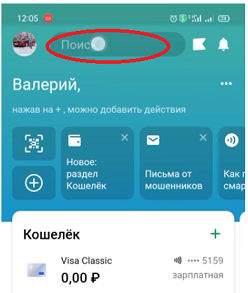
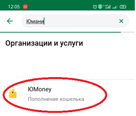
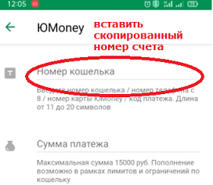

ПОДДЕРЖАТЬ CОЗДАТЕЛЯ
Вы можете поддержать мой труд, отблагодарив финансово :
Шаг 1: скопируйте номер карты в буфер обмена, нажав кнопку ниже:
4100117204035489
Шаг 2: зайдите в ваше приложение СберОнлайн и введите в поиске слово "юмани"


Шаг 3: Откройте окно юmoney и вставьте номер карты из буфера обмена

Если у вас не получилось, вы можете написать мне в инстаграме по ссылке ниже для альтернативного варианта перевода
ОБРАТНАЯ СВЯЗЬ
Для пожеланий, предложений помощи и вопросов, связаться можно, написав в личные сообщения в официальном аккаунте ванны в инстаграме, нажав на иконку ниже:
НОВОСТИ
20 августа 2021 - начало строительства ванны

21 сентября 2021 - ввод ванны в эксплуатацию

октябрь 2022 - добавлен водопадный сток в ванну

ПОМОЩЬ
Требуется:
- саженцы
- Деревянные бруски (от 1.6м)
- кирпич, блоки
- арматура
- гравий/галька